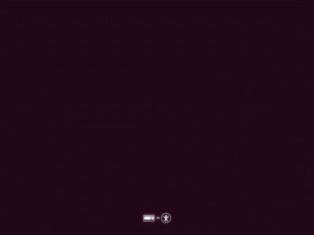
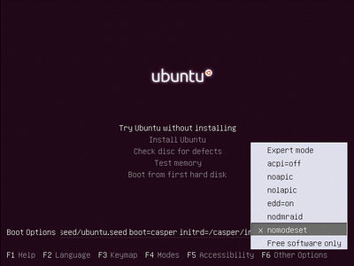
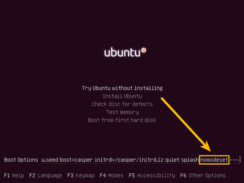
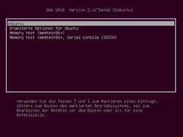
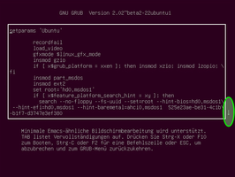
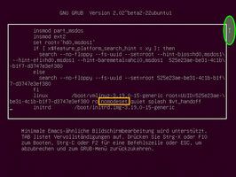

Bootoptionen
Dieser Artikel wurde für die folgenden Ubuntu-Versionen getestet:
Dieser Artikel ist größtenteils für alle Ubuntu-Versionen gültig.
Zum Verständnis dieses Artikels sind folgende Seiten hilfreich:
Im Linux-Kernel sind in Form von Kernelmodulen Treiber für verschiedenste Hardwarekomponenten bereits enthalten. In den meisten Fällen erhält man daher bereits durch eine Standardinstallation ein reibungslos laufendes Betriebssystem. Manchmal aber treten Probleme beim Rechnerstart oder im laufenden Betrieb auf, wenn etwa bestimmte BIOS-Funktionen fehlerhaft implementiert sind oder wenn Hardwarekomponenten nicht unterstützt werden (gerade für sehr neue Komponenten könnte evtl. noch ein Treiber fehlen). Mit geeigneten Bootoptionen kann man beim Start des Systems entsprechende Funktionen beeinflussen und so Abhilfe schaffen.
Praxisbeispiele¶
Einige typische Szenarien als Beispiele (die in den folgenden Erklärungen wieder aufgegriffen werden):
Auf einem Notebook mit einem Pentium-M-Prozessor soll Ubuntu installiert werden. Eine aktuelle 32-bit-Version beispielsweise von Ubuntu 14.04 ist mit ihrem PAE-Kernel darauf ohne weiteres lauffähig. Aufgrund einer fehlerhaften Implementierung in diesem Prozessor (vgl. auch Alte Hardware) wird dem startenden Betriebssystem dessen Fähigkeit für PAE aber nicht angezeigt und der Start bricht mit einem Fehler ab – auch bereits mit der zur Standardinstallation notwendigen Desktop-CD. Mit der Bootoption
forcepaelässt sich jedoch das falsche Ergebnis der PAE-Abfrage übergehen, sodass der Rechner hochfahren und normal laufen kann. Diese Bootoption ist dann natürlich auch für ein installiertes System zu aktivieren (was bei einer Installation nicht berücksichtigt wird und manuell erfolgen muss. Siehe auch Problembehebung).
Einige Grafikkarten werden von den Kernelmodulen nicht richtig unterstützt. Bei einem Start bleibt bzw. wird der Bildschirm schwarz. Das System ist dann weder bedien- noch konfigurierbar, um einen geeigneten Treiber nachzuinstallieren. Oftmals helfen dann Bootoptionen wie
nomodesetoderxforcevesa, um das System überhaupt einmal – wenngleich mit reduzierter Grafik – bedienbar starten zu können. Wenn dann ein passender Grafiktreiber erfolgreich installiert wurde, braucht und sollte eine solche Bootoption (die i.d.R. also nur als Notbehelf vorgesehen ist) auch nicht dauerhaft ins installierte System übernommen werden.
Abfrage¶
Beim Booten aktive Optionen kann man sich im laufenden System über das Terminal anzeigen lassen:
cat /proc/cmdline
Neben dem geladenen Boot-Image werden auch alle Optionen aufgeführt. Die Ausgabe kann beispielsweise so aussehen (hier: Kubuntu 14.04.1 mit Kernel 3.13.0-46):
BOOT_IMAGE=/boot/vmlinuz-3.13.0-46-generic root=UUID=1847456f-c740-48ac-bff9-198f2591c90c ro quiet splash
Benutzung¶
Der folgende Abschnitt behandelt die grundsätzliche Handhabung von Bootoptionen je nach Situation: Beim Start einer Desktop-CD, beim Start eines installierten Systems oder zur dauerhaften Übernahme in ein System. In der anschließenden Referenz werden viele häufig hilfreiche Bootoptionen vorgestellt und erläutert.
Um eine Desktop-CD mit speziellen Optionen zu starten oder beim Systemneustart andere als die voreingestellten Optionen zu übergeben, sind der gewöhnliche Bootprozess zu Beginn zu unterbrechen und bestimmte Kommandos auszuführen. Um für ein installiertes System bestimmte Bootoptionen dauerhaft festzulegen, ist der Bootmanager GRUB 2 zu konfigurieren. Die folgenden Unterabschnitte beschreiben das jeweilige Vorgehen.
Zur Bootzeit steht nur die amerikanische Tastaturbelegung zur Verfügung. Folgende Tabelle zeigt, wie man die entsprechenden Zeichen auf einer Tastatur mit deutscher Belegung eingeben kann. Weitere Zeichen können dem Wikipedia-Bild Amerikanische Tastatur entnommen werden. Wenn eine Funk-Tastatur beim Booten noch nicht funktioniert, muss man vorübergehend eine kabelgebundene verwenden.
{kind=link}
| Kurzreferenz: deutsche Tastatur – amerikanische Belegung | |
| Zeichen | Auf deutscher Tastatur |
= | ⇧ + ` (Links neben der Rückschritttaste) |
- (Bindestrich/Minus) | ß |
_ (Unterstrich) | ⇧ + ß |
z | Y (Großbuchstabe mit ⇧ ) |
y | Z (Großbuchstabe mit ⇧ ) |
Start von Desktop-CDs¶
Wenn die Live-DVD oder -CD ins Laufwerk eingelegt ist bzw. das USB-Medium an den Rechner angeschlossen ist, startet das Live-System darauf möglicherweise beim nächsten Einschalten ohne weiteres Zutun. Sonst muss beim Hochfahren durch Drücken einer bestimmten Taste (modellabhängig) das Setup des Rechners oder sein Bootmenü aufgerufen werden.
Hinweis:
Die folgenden Angaben basieren auf Tests mit den ISOs zu Ubuntu, Kubuntu, Ubuntu GNOME, Xubuntu und Lubuntu 14.04.2 sowie Ubuntu 12.04.5. Bei anderen (auch älteren oder neueren) Ubuntu-Versionen bzw. -Varianten könnten geringfügige Abweichungen auftreten. Insbesondere können das Startverhalten und die Menüführung bei einem Live-USB-Medium wiederum abweichen, je nachdem, welches Werkzeug für dessen Herstellung benutzt worden ist. Die folgenden Angaben sollten jedoch auf die jeweilige Situation sinngemäß übertragen werden können.
Herkömmliches BIOS oder (U)EFI: Die Desktop-CDs aller Ubuntu-Varianten können sowohl im herkömmlichen BIOS-Modus (auch "Legacy Mode" oder "CSM") als auch im (U)EFI-Modus gestartet werden. Besonders wenn der Computer beide Modi unterstützt und folglich das Ubuntu-Live-System im Bootmenü zweimal erscheint – einmal mit "EFI" oder "UEFI" im Eintrag und einmal ohne –, hängt von dieser Auswahl beim Booten ab, ob eine eventuelle spätere Installation von diesem Medium im entsprechenden Modus gelingen wird. Soll ein USB-Medium verwendet werden, muss es je nach Bedarf zur Verwendung für den herkömmlichen BIOS-Modus, für (U)EFI oder für beides hergestellt und wiederum im geeigneten Modus gestartet werden.
Durch Drücken einer beliebigen Taste beim Startbildschirm (kleines Logo mittig unten) einer Desktop-CD gelangt man in einen Auswahlbildschirm ("advanced welcome page" lt. Ubuntu Wiki  ), der als erstes ein Menü zur Sprachauswahl öffnet (vgl. jeweils die Bildschirmphotos). Die folgende Darstellung behandelt den Vorgang bei der Desktop-CD eines Standard-Ubuntu
), der als erstes ein Menü zur Sprachauswahl öffnet (vgl. jeweils die Bildschirmphotos). Die folgende Darstellung behandelt den Vorgang bei der Desktop-CD eines Standard-Ubuntu  (mit der Oberfläche Unity) – bei manchen anderen Varianten gibt es davon allerdings geringfügige Abweichungen:
(mit der Oberfläche Unity) – bei manchen anderen Varianten gibt es davon allerdings geringfügige Abweichungen:
 Kubuntu: Der Auswahlbildschirm öffnet nicht gleich die Sprachauswahl. Diese ist aber (wie sonst auch jederzeit) über die Taste
F2 erreichbar.
Kubuntu: Der Auswahlbildschirm öffnet nicht gleich die Sprachauswahl. Diese ist aber (wie sonst auch jederzeit) über die Taste
F2 erreichbar. Lubuntu: Den ersten Startbildschirm gibt es nicht, sondern man gelangt immer gleich in den Auswahlbildschirm, der auch wiederum als erstes die Sprachauswahl anbietet. Dabei läuft aber ein Countdown von 30 Sekunden, wonach das System mit den Standardeinstellungen bootet, sofern man den Countdown nicht mit einer beliebigen Taste abbricht.
Lubuntu: Den ersten Startbildschirm gibt es nicht, sondern man gelangt immer gleich in den Auswahlbildschirm, der auch wiederum als erstes die Sprachauswahl anbietet. Dabei läuft aber ein Countdown von 30 Sekunden, wonach das System mit den Standardeinstellungen bootet, sofern man den Countdown nicht mit einer beliebigen Taste abbricht.
|  |
| Startbildschirm der Live-CD |
|  |
| Auswahlbildschirm, gängige Bootoptionen ( F6 ) |
|  |
| Auswahlbildschirm, Aufrufzeile manuell editieren ( F6 , Esc ) |
Um für den Systemstart bestimmte Bootoptionen vorzugeben, hat man folgende Möglichkeiten:
Über die Taste F6 öffnet sich (in grauer Farbe den Hauptbildschirm überlagernd, vgl. Bild oben) ein Auswahlmenü mit häufig genutzten Bootoptionen. Angesteuert werden diese Optionen mit den Pfeiltasten hoch/runter ↑ + ↓ und aktiviert bzw. deaktiviert mit der Leertaste oder mit der Eingabetaste ⏎ . Eine aktivierte Option erhält zur Kennzeichnung ein Kreuzchen im Auswahlmenü. Nachdem alle gewünschten Einstellungen vorgenommen worden sind, wird dieses Menü mit der Taste Esc geschlossen. Für eventuelle Korrekturen kann das Auswahlmenü erneut mit der Taste F6 aufgerufen werden (unter dem Menü wird die Aufrufzeile für den Kernel angezeigt, die über das Auswahlmenü aktivierten Bootoptionen werden jedoch nicht in diese Kernel-Zeile übernommen).
Wird das Auswahlmenü mit gängigen Kernel-Bootoptionen ( F6 ) gleich wieder mit der Taste Esc geschlossen, kann die jetzt sichtbare Aufrufzeile auch manuell editiert werden, d.h., es können Bootoptionen direkt dort eingetragen werden. Innerhalb der Zeile bewegt man den Cursor mit den Pfeiltasten links/rechts ← + → . Werden neue Optionen vor die zwei Bindestriche (
--) am Ende der vorgegebenen Zeile eingetragen, wird ausschließlich das Live-System mit diesen Optionen gestartet; trägt man sie dahinter ein, werden diese Optionen auch in ein evtl. mit der Live-CD installiertes System übernommen (siehe auch Problembehebung). Alle Angaben – auch die Bindestriche – müssen durch ein Leerzeichen voneinander getrennt werden.
Gestartet wird das System mit dem nun angepassten Kernel-Aufruf schließlich mit der Eingabetaste ⏎ .
Start eines installierten Systems (einmalig)¶
|  |
| GRUB-Auswahlmenü |
|  |
| GRUB-Bearbeitungsmodus Teil 1 E |
|  |
| GRUB-Bearbeitungsmodus Teil 2 E |
Bei einem im Dualboot installierten Ubuntu sowie einer Live-CD im EFI-Modus bekommt man beim Start normalerweise ein GRUB-Auswahlmenü angezeigt (vgl. auch Bearbeitungsmodus von GRUB 2). Sollte das GRUB-Menü nicht oder nur sehr kurz erscheinen, so kann man die Anzeige erzwingen, indem man ⇧ während des Boot-Vorgangs gedrückt hält. Dann bearbeitet man manuell die Startparameter wie folgt:
Der zu bearbeitende Eintrag ist mit den Pfeiltasten hoch/runter ↑ + ↓ anzuwählen (wie wenn man das System mit dem betreffenden Menüeintrag normal starten würde).
Der Bearbeitungs-Modus wird durch Eingabe von der Taste E (kleines e!) geöffnet.
Mit den Pfeiltasten steuert man die Zeile an, die mit "
linux ..." oder "kernel ..." beginnt. Diese Kernel-Zeile erstreckt sich meist über zwei Monitorzeilen; das Ende der Kernel-Zeile endet normalerweise mit den Bootoptionen "quiet splash" oder "quiet". Dort trägt man die benötigten Optionen ein, jeweils durch ein Leerzeichen getrennt, oder man löscht ggf. vorhandene Optionen.Der Kernel kann nun mit den so geänderten Parametern durch Drücken von Strg + X gestartet werden (dazu darf man den Bearbeitungs-Modus nicht mit Esc verlassen).
Beispiel: Das Bildschirmphoto oben demonstriert den zusätzlichen Eintrag von nomodeset.
Dauerhafte Konfiguration eines Systems¶
Um bestimmte Bootoptionen dauerhaft für ein installiertes System festzulegen (oder daraus zu entfernen), ist die Datei /etc/default/grub, die Haupt-Konfigurationsdatei des Bootmanagers GRUB 2, mit einem Editor bearbeiten. Zuständig sind dort die folgenden beiden Einträge, die auf jedem installierten Ubuntu bereits angelegt sein sollten:
GRUB_CMDLINE_LINUX: Hier eingetragene Optionen werden bei jedem Systemstart berücksichtigt, sowohl im Standard- als auch im Wiederherstellungsmodus.GRUB_CMDLINE_LINUX_DEFAULT: Hier eingetragene Optionen werden nur im Standard-, nicht aber im Wiederherstellungsmodus berücksichtigt.
Wenn nicht bei der Installation oder nachträglich schon bestimmte Optionen gesetzt worden sind, enthalten die entsprechenden Zeilen der Datei dies:
GRUB_CMDLINE_LINUX_DEFAULT="quiet splash" GRUB_CMDLINE_LINUX=""
Alle nötigen Bootoptionen sind bzw. werden zwischen die bereits vorhandenen beiden Anführungszeichen eines Eintrags platziert, jeweils durch Leerzeichen getrennt. Die Optionen quiet splash in der ersten Zeile bewirken, dass der Rechner beim Start einen grafischen Startbildschirm anstatt fortlaufender Textausgaben anzeigt. Zusätzliche für den Rechnerbetrieb notwendige Optionen werden gewöhnlich dem (hier noch ganz ohne Optionen befindlichen) zweiten Eintrag GRUB_CMDLINE_LINUX hinzugefügt.
Beispiel: Erfordert ein Rechner mit einem Pentium-M-Prozessor die Option forcepae, ändert man die zweite Zeile auf:
GRUB_CMDLINE_LINUX="forcepae"
Damit die vorgenommenen Änderungen in der /etc/default/grub übernommen werden, ist noch auszuführen:
sudo update-grub
Referenz¶
In diesem Abschnitt werden eine Reihe von Bootoptionen (nicht jedoch alle möglichen) aufgelistet und erläutert, gruppiert in Tabellen u.a. nach der angenommenen Häufigkeit ihrer Verwendung. Dabei werden teils im IT-Bereich übliche Abkürzungen benutzt.
Häufig genutzte Bootoptionen¶
Diese Liste stellt Bootoptionen vor, die bei den meisten Problemen helfen.
| Auswahl von Bootoptionen lt. kernel.org | ||
| Option | Komponente bzw. Zweck | Beschreibung |
nomodeset | Grafik, Mode-Setting | Gibt den Video-Modus wieder an den XServer ab. Ab Kernel 2.6.28 wurde der Video-Modus der Grafikkarten vom XServer in den Kernel verlagert. Dadurch wurde es möglich, dass ein hochauflösender "Boot Splash" (siehe Plymouth) flackerfrei angezeigt werden kann. Bei einigen Karten bleibt dieser "Boot Splash" hängen oder endet in einem schwarzen Bildschirm. Dieses Verhalten tritt z.B. bei nVidia-Karten und dem "nouveau"-Treiber auf - nach Installation des proprietären nVidia-Treibers kann diese Option oft wieder entfernt werden. |
xforcevesa | Grafik | Der XServer (graphische Oberfläche) wird unabhängig von der verwendeten Hardware nur für VESA konfiguriert. |
all_generic_ide | Kernel | Beim Booten werden die generischen IDE-Treiber für alle Geräte verwendet, die vom BIOS erkannt wurden. |
forcepae | Kernel | Erzwingt das Laden des Kernels auch bei Prozessoren, die keine Physical Address Extension anzeigen. Dies ist sinnvoll für Prozessoren, welche diese Erweiterung besitzen, aber fälschlicherweise nicht anzeigen. Betroffen sind verschiedene Modelle der Serien Pentium M und Celeron M. Diese Bootoption funktioniert nur bei der 32-bit-Variante. |
nodmraid | Software-RAID deaktivieren | Es kann vorkommen, dass die Installationsroutine keinen Datenträger findet. Um diesen Umstand zu beheben, kann man beim Booten bereits RAID deaktivieren, oder man deinstalliert direkt im Live-System in einem Terminal [2] das Paket dmraid. sudo apt-get purge dmraid |
acpi=off | Hardware[3], ACPI, X86 | acpi=off sollte ganz zuletzt und nur zur Installation genutzt werden. Das komplette ACPI wird deaktiviert, d.h. auch wichtige Teile wie z.B. die Lüftersteuerung werden abgeschaltet, und es kann zur Überhitzung und im schlimmsten Fall zu bleibenden Hardwareschäden kommen. |
acpi_osi= acpi_osi="Linux" | Hardware, ACPI | Löscht die Liste der unterstützten Betriebssysteme bzw. setzt sie, z.B. "Linux" oder auch "Windows 2007". Diese Option bezieht sich auf BIOS-Änderungen, die speziell für Windows (meist Vista) vorgenommen, aber fehlerhaft implementiert wurden. |
Optionen für Bootmeldungen¶
Folgende Optionen steuern die Ausgabe während des Bootvorgangs. Seit der Einführung von Plymouth wird die Anzeige von Kernelmeldungen hinter einem Bild versteckt. Diese Optionen können die Anzeige ggf. wieder sichtbar machen.
| Auswahl von Bootoptionen lt. kernel.org | ||
| Option | Komponente bzw. Zweck | Beschreibung |
splash nosplash noplymouth | "Boot Splash" | Steuert, ob und wie ein Splashscreen beim Start erscheint. Seit der Einführung von Plymouth muss der "Boot Splash" mit noplymouth (anstatt nosplash) abgeschaltet werden. Möchte man die Kernelmeldungen beim Ladeprozess mitverfolgen, dann muss zusätzlich quiet entfernt werden. |
quiet | Kernel | quiet=still: unterdrückt die Log-Meldungen des Kernels. Löscht man diese Option, bekommt man den gesamten Startverlauf angezeigt und kann besser Hinweise auf weitere Problemfälle identifizieren. Seit Plymouth arbeitet diese Option mit splash zusammen, d.h. man sollte beim Entfernen dieser Option auch noplymouth einsetzen. |
BOOT_DEBUG=2BOOT_DEBUG=3 | Boot | Schaltet den Debug-Modus ein – nützlich für die Fehlersuche beim Startvorgang. |
debugdebug=vc | Boot | Erzeugt sehr viele Debug-Informationen, die unter /run/initramfs/initramfs.debug abgelegt werden.debug=vc: Leitet alle Debug-Informationen auf eine virtuelle Konsole um. |
texttextonly | Boot | Bootet in eine virtuelle Konsole mit Netzwerk ohne Start des XServers. Funktioniert nur bis einschließlich Ubuntu 14.04. Bei Lubuntu 17.10 kann text als temporärer Workaround gegen Intel Mobile Graphics 945 shows 80 % black screen eingesetzt werden. |
Weitere Bootoptionen¶
| Auswahl von Bootoptionen lt. kernel.org | ||
| Option | Komponente bzw. Zweck | Beschreibung |
ro | Boot, Kernel | Hängt das root=-Device während des Bootens mit "nur lesen" (ro) ein. |
root= | Boot, Kernel | Definiert das root-Device, z.B. root=UUID=, root=/dev/... |
noacpi | X86, ACPI, IRQ | Unterbindet das IRQ-Routing bzw. das Suchen nach PCI-Anschlüssen für ACPI. Diese Option kann bei einem älteren BIOS hilfreich sein. |
acpi=force acpi=noirq acpi=copy_dsdt | Hardware, ACPI, X86 | force - aktiviert ACPI zwangsweise – hilfreich bei einem BIOS-Datum vor 2000, bei denen ACPI abgeschaltet ist.noirq - schaltet ACPI für das IRQ-Routing ab.copy_dsdt - kopiert die DSDT in den RAM – hilfreich bei Toshiba-Notebooks. |
acpi_backlight=vendor | ACPI | Nutzt einen spezifischen Herstellertreiber für die Hintergrundbeleuchtung bei LCDs. |
nolapic | X86-32, APIC, IRQ | Schaltet das lokale APIC wird ab. In Kombination mit noacpi beeinflusst es die Tastatur- und Maussteuerung, sowie den Schlafmodus – hilfreich bei Notebooks mit 32-bit-Systemarchitektur. |
nolapic-timer | X86-32, APIC, IRQ | Deaktiviert den lokalen APIC-Timer, um Instabilitäten durch den Timer zu umgehen, der Rest von APIC bleibt voll funktionsfähig – hilfreich bei Notebooks mit 32-bit-Systemarchitektur, da das Energiemanagement funktional bleibt. |
edd=on | EDD | Aktiviert "Enhanced Disk Drive Services" (ein Standard, der wichtige BIOS-Funktionen zum Verwenden von Laufwerken beschreibt: ATA-/IDE-/SCSI- …). |
vt.handoff=7 | Virtuelles Terminal | Verweist auf das virtuelle Terminal (hier 7), in der der XServer gestartet und der Plymouth-Hintergrund erzeugt wird (eine ebenfalls mit Plymouth eingeführte Option). |
single | Kernel | Startet den Kernel im Einbenutzer-Modus (single mode). Bei Ubuntu ist das die Wiederherstellungskonsole (Rettungskonsole). |
treibername.blacklist=yes sdhci.blacklist=yes | bestimmte Treiber | Deaktiviert bestimmte Treiber. Oft kommt es vor, dass ein bestimmter Treiber beim Booten der Live-CD oder auch der Alternate-CD große Probleme macht und das System an genau dieser Stelle hängen bleibt. Das Laden dieses Treibers kann man durch Blacklist-Option verhindern, wie hier am Beispiel des sdhci-Treibers gezeigt. |
agp=off agp=try_unsupported | Grafik, AGP | Steuert AGP, eine ältere Anschlussnorm auf PC-Mainboards zur direkten Verbindung der Grafikkarte mit dem Chipsatz/Northbridge. Sie basiert technologisch auf dem PCI-Bus. |
apm=off | APM | Steuert APM, ein Standard zur Energieverbrauchssteuerung, der bei neuen PCs durch ACPI abgelöst worden ist. |
bootchart=disable | Boot | Deaktiviert den manuell installierten Boot-Chart. |
elevator=... | Block Device | Gewünschter Scheduler für Blockgeräte (Massenspeicher). Zur Auswahl stehen cfq, deadline und noop. Insbesondere bei SSD-Festplatten empfiehlt sich der "Deadline Scheduler" statt des "Completely Fair Schedulers" (vgl. auch SSD/Scheduler bzw. deadline-iosched.txt ). Ab Ubuntu 12.10 ist deadline als Standard voreingestellt, während cfq bei klassischen Festplatten besser geeignet ist. |
gpt | EFI | Erzwingt das Auswerten der Partitionstabelle als gültige GPT – nützlich wenn Datenträger zwar die GPT-Signatur "EFI PART" hat, der "Protective MBR" aber ungültige Werte enthält. |
noefi | EFI, X86 | Deaktiviert die EFI-Unterstützung.Achtung!Die Verwendung dieser Bootoption sollte nur zur Installation verwendet werden, da sie sonst unter Umständen zu einem nicht mehr bootbaren System führt. Siehe auch: EFI Grundlagen und EFI Installieren |
hpet=force | X86-32, HPET | Erzwingt die Aktivierung des HPET-Timers – hilfreich zum Energiesparen bei Laptops, dessen BIOS den "High Precision Event Timer" vor dem Betriebssystem verstecken, z.B. IBM Thinkpad X31. |
ht=on | SMP, Multicore[5] | Schaltet Hyper-Threading (mehrere CPUs) ein – wird bei der Installation von Ubuntu in seltenen Fällen nicht automatisch aktiviert. |
iommu= | IOMMU | Kann beispielsweise  bei Nichterkennung von USB 2.0 Abhilfe bringen. Parameter bei Nichterkennung von USB 2.0 Abhilfe bringen. Parameter |
irqpoll | Hardware, IRQ | IRQ ist eine Unterbrechungsanforderung per Leitung an den Prozessor. Polling ist das Verfahren zur Steuerung des Zugriffs auf angeschlossene Geräte. |
md= | RAID | auch: raid=siehe dazu die raid/md.txt |
noapic | SMP, IRQ, Multicore | Deaktiviert die automatische Erkennung von APIC (IRQ-Verwaltung). |
nosmp | SMP, Multicore | Deaktiviert die Unterstützung für Multicore-CPUs. |
maxcpu= | SMP, Multicore | Steuert, wie viele Kerne das System benutzen soll, z.B. bei maxcpus=1 nur einen Kern. |
pci= pci=noacpi pci=noaer pci=nocrs pci=nomsi pci=routeirq | PCI, PCIE ... | Beeinflusst verschiedene PCI-Subsysteme:noacpi - schaltet die ACPI-Erkennung während der PCI-Konfiguration aus – hilfreich bei manchen VIA-Chipsätzen.noaer - schaltet "PCIe Advanced Error Reporting" ab. pci=nocrs - verwirft PCI-ACPI-Informationen, kann Boot-Probleme umgehen. nomsi - schaltet "Message Signaled Interrupts" ab – hilfreich bei Problemen mit dem SATA-Controller auf neueren Mainboards.routeirq - schaltet IRQ-Autorouting ein – hilfreich für einige Mainboards, z.B. Asus A7N8X. |
pcie_aspm=force | PCIE | Erzwingt "Active State Power Management" bei PCI Express (ab Kernel 2.6.38). |
processor.max_cstate=3 | Hardware | Umgeht das Problem des C4-Fiepens. |
ramdisk_size=... | RAM, ramdisk | Legt die Größe der RAM-Disk (ein virtueller, temporärer Datenträger im Arbeitsspeicher) fest. |
rootdelay= | Boot | Bestimmt, wie lange (in Sekunden) mit dem Einhängen von / (root) gewartet wird (vgl. dazu kernel-parameters.txt ). |
toram | Boot | Lädt eine Live-CD/DVD in das RAM. Ermöglicht flüssiges arbeiten mit dem Live-System. Nur empfohlen ab 2GB RAM. Der Datenträger muss nach erfolgreicher Installation in das RAM ausgehängt werden. |
video= video=SVIDEO-1:d | Framebuffer | Steuert den Video-Support/Bildschirmauflösung (vgl. dazu framebuffer/modedb.txt ).SVIDEO-1:d - verhindert auf alten Intel-IGPs verlangsamtes Booten mit Black Screen. Der korrekte Port kann über xrandr abgefragt werden. |
vga=... | Boot, X86-32 | Setzt entsprechende Video-Modi für die virtuellen Konsolen (vgl. auch boot.txt und svga.txt ). |
vmalloc= | Kernel, Boot | Ermöglicht Angaben von nnK/M/G. Bei einigen 32 Bit-Systemen können keine Treiber aus Mangel an virtuellem Adressraum geladen werden. Fehlermeldung:allocation failed: out of vmalloc space ...Durch Angabe von z.B. 128M kann dieser Adressraum im RAM verkleinert/vergrößert werden. |
Debian-Bootoptionen¶
| Einige spezielle Optionen zum Debian-Installer lt. Debian-Dokumentation | |
| Option | Beschreibung |
debian-installer/language=de | Aktiviert die deutsche Sprachunterstützung. |
keyboard-configuration/layout=de | Aktiviert das deutsche Tastaturlayout. |
debian-installer/framebuffer=false | Deaktiviert den Framebuffer – hilfreich bei Fehlermeldung mit bogl-bterm, schwarzem Bildschirm oder Einfrieren. |
debian-installer/probe/usb=false | Unterbindet die Suche nach USB-Geräten (für den Fall, dass es damit Probleme gibt). |
netcfg/disable_dhcp=true | Verhindert, dass DHCP verwendet wird, wenn es einen DHCP-Server im Netzwerk gibt, man ihn aber nicht verwenden möchte. |
Problemhebung¶
Bootoptionen für Live-Systeme¶
Ab Ubuntu 15.04 wurde eine Änderung in der Syntax der Kernelzeile im Zusammenhang mit den drei bzw. zwei Bindestrichen (---/--) eingeführt: Nach den Bindestrichen eingetragene Optionen betreffen jetzt ausschließlich ein evtl. von der Live-CD/DVD installiertes System und gelten nicht für das startende Live-System selbst (siehe Ubuntu-Wiki ). Daher müssen Optionen ggf. zweimal – einmal vor und einmal nach den Bindestrichen – eingetragen werden, um sowohl für das jetzt startende Live-System als auch eine eventuelle Installation wirksam zu werden.
Diese Neuentwicklung ist derzeit (Stand: April 2015) offensichtlich noch im Gange, und es ist nicht vollständig bekannt, welche Systeme von der Umstellung betroffen sind. Um sicher zu gehen, dass Bootoptionen in jedem Fall sowohl für das Live-System als auch für eine Installation wirksam werden, dürfte es unbedenklich und zielführend sein, in jedem Fall (auch auf Desktop-CDs mit der alten Syntax) dieselbe Option einfach an beiden Stellen (vor und nach den Bindestrichen) aufzuführen.
Beispiele:
Wenn die vorhandene Grafikkarte die Option
nomodeseterfordert, kann dies über das Auswahlmenü mit F6 aktiviert werden.Wenn der vorhandene Prozessor die Option
forcepaeerfordert, bleibt nur das manuelle Ergänzen der Kernelzeile, da das Auswahlmenü diese Option nicht enthält. Da der Rechner diese Option in jedem Fall zum Starten benötigen wird, empfiehlt sich der zweimalige Eintrag vonforcepae, einmal vor und einmal nach den beiden Bindestrichen.
Links¶
Intern¶
System
 Artikelübersicht zu Systemstart und -ende
Artikelübersicht zu Systemstart und -endeGRUB 2
- Übersicht zum BootmanagerBootvorgang - Der Bootvorgang eines Computers
Firmware Test Suite - "Gesundheitscheck" des BIOS/UEFI und dessen Interaktion mit dem Kernel
Wiederherstellungmodus - Die Root-Shell zum Reparieren eines Ubuntus
Plymouth - Der grafische "Boot Splash"
Extern¶
kernel.org
Kernel-Dokumentationcommunity/BootOptions
im Ubuntu Wikicommunity/BootOptions/before--after
: Hinweise zur neueren Syntax der Kernelzeile bei Desktop-CDs
initramfs-tools
- ManpageVideo-Tutorial: Howto Change Linux Boot Options and Splash Screen (Nixie Pixel)
(deckt einige hier behandelte Aspekte ab)
- Erstellt mit Inyoka
-
 2004 – 2017 ubuntuusers.de • Einige Rechte vorbehalten
2004 – 2017 ubuntuusers.de • Einige Rechte vorbehalten
Lizenz • Kontakt • Datenschutz • Impressum • Serverstatus -
Serverhousing gespendet von